The Skyline Targeted Mass Spectrometry Environment provides informative visual displays of the raw mass spectrometer data you import into your Skyline documents. Originally developed for proteomics use, Skyline has been extended to work with generalized molecules. This tutorial explores using Skyline for targeted quantification of small molecules.
In this tutorial, you will learn about development of a multiplexed method for selected energy metabolites on LC-MS/MS (triple quadrupole). In the analysis of this dataset you will learn about:
You may also wish to view the second half of Skyline Tutorial Webinar 16, on which this tutorial is based.
Skyline aims to provide a vendor-neutral platform for targeted quantitative mass spectrometry research. It can import raw data from the instrument vendors Agilent, SCIEX, Bruker, Shimadzu, Thermo-Scientific, and Waters. The ability to import data across various instrument platforms facilitates cross-instrument comparisons and multi-site studies. This remains equally true in using it to target small molecules, as it has been for years in the field of proteomics.
If you have not already looked at the “Skyline Small Molecule Targets” tutorial you should do so now, in order to pick up a few basics about how Skyline works with small molecule descriptions including chemical formulas and adducts.
To start this tutorial, download the following ZIP file:
https://skyline.ms/tutorials/SmallMoleculeMethodDevAndCEOptimization.zip
Extract the files in it to a folder on your computer, like:
C:\Users\bspratt\Documents
This will create a new folder:
C:\Users\bspratt\Documents\SmallMolMethodCE
It will contain all the files necessary for this tutorial.
If you have been using Skyline prior to starting this tutorial, it is a good idea to revert Skyline to its default settings. To do so:
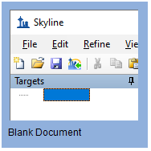
The document settings in this instance of Skyline have now been reset to the default.
Since this tutorial covers a small molecule topic, you can choose the molecule interface by doing the following:
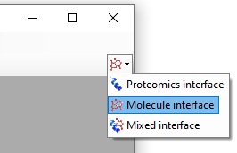
Skyline is operating in molecule mode which is displayed by the molecule icon  in the upper
right-hand corner of the Skyline window. Its original proteomics menus and controls are now hidden, allowing you to focus on small molecule
analysis.
in the upper
right-hand corner of the Skyline window. Its original proteomics menus and controls are now hidden, allowing you to focus on small molecule
analysis.
The transition lists in this tutorial are from a high speed HILIC method, based on Guder et al. Anal Chem. 2017 Feb 7;89(3):1624-1631. The raw data for the tutorial itself was then collected on an Acquity UPLC coupled to a Waters Xevo TQ-S triple quad.
This is the published transition list:

It provides information about light (12C) and heavy (13C) precursor and fragment m/z and charge for each molecule. For the purposes of this tutorial, you will work only with the negative mode entries. The collision energy (CE) values are from an Agilent 6495 triple quadrupole mass spectrometer. You will use these as a starting point even though you will develop a new method for Waters Xevo TQ-S as we did to collect the data files you will use.
With a little effort in Excel or another spreadsheet editor, the table above can be reformatted so that Skyline can read it. For instance, the heavy and light versions of each transition are expected to be on different lines as in an instrument transition list. The result of this reformatting can be found in the “Energy_TransitionList.csv” file provided in the folder you created at the start of this tutorial.
Because the “Energy_TransitionList.csv” file is formatted with column headers that Skyline recognizes, you can bypass the Insert Transition List form reached through the menu option Edit > Insert > Transition List and simply paste everything (include the header row) into the Skyline Targets view. To do this, perform the following steps:
Your Skyline window should now look something like this:

| NOTE: In this tutorial, you have provided only m/z and charge values for these targets. Skyline can accept higher level descriptions including chemical formulas and heavy isotope labels etc. Having the chemical formula is especially useful when working with full scan, high resolution data as it allows Skyline to calculate isotopic distributions, but for SRM data such as this, using m/z and charge is adequate. |
Next you will update the Transition Settings to match the instrument method and experimental mass spectrometer results for this tutorial by performing the following steps:

Later you will perform a collision energy optimization refinement on a Waters Xevo as part of method development and optimization, since the starting collision energies you pasted from the paper were originally used on an Agilent instrument.

This experiment measures only negatively charged transitions, as you have just indicated in the transition settings. Skyline adduct descriptions support any kind of ionization description (“[M-H]”, “[M+Na]” etc.), including unknown ionization modes (the “[M-]” used here to indicate “negative mode, charge 1, without any known chemical composition to explain it”). In the Ion types field, the value “f” indicates only fragment ion transitions will be measured. If you wanted to measure precursor ions as well, you would use “f, p”.
The remaining three tabs either do not apply (Library and Full-Scan) or have acceptable defaults (Instrument).
Now, save the current Skyline document as follows:
In general, if you are running Skyline on a computer with the instrument control software for your mass spectrometer installed, Skyline can export to a native instrument method using a template method file you specify. Some Thermo instruments require this to be done on the instrument control computer.
If you do not have Waters MassLynx installed skip to the next section “Exporting a Transition List”.
Otherwise, export two methods, one for 2 minutes and one for 5 minutes duration, as follows:
The Export Method form should now look like this:

If you do not have the required instrument vendor software on your computer for exporting directly to an instrument method file, you can export an instrument-specific transition list, which you can later import into an instrument method using vendor software. The steps for exporting a transition list are very similar to that for exporting an unscheduled method, except that there is no template file:
The Export Method form should now look like this:

At this point, you would collect data for the samples using 2- and 5-minute gradients. The samples used in this experiment were from a commercially available kit and are 1:1 mixes of light:heavy metabolites extracted from E. Coli (Credentialed E. Coli Lysate from Cambridge Isotope Laboratories).
Results of these two mass spectrometer runs are in a subfolder named “Unscheduled” under the folder you created at the start of this tutorial. The file with the name containing “01a” was collected on a 2-minute gradient, and “02a” on a 5-minute gradient. You will examine these results to decide which gradient is most effective for this experiment.
Perform the following steps to import these files into the document you have created:
The Import Results Files form should look like this:

Skyline will notice that these file names share a common prefix and suffix and present the following form:

The files should import relatively quickly, leaving your Skyline main window looking something like this:

The replicate names “1” and “2” are not very meaningful, but you can change them to something more descriptive by doing the following:

This should leave the main Skyline window looking like this:
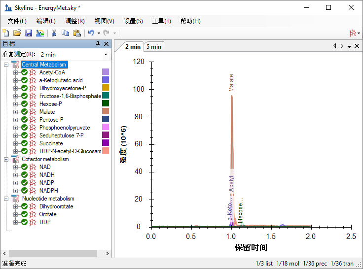
To take advantage of the Skyline summary graphs for viewing statistics for multiple replicates on a single screen, do the following:
The Skyline window should now look something like this:
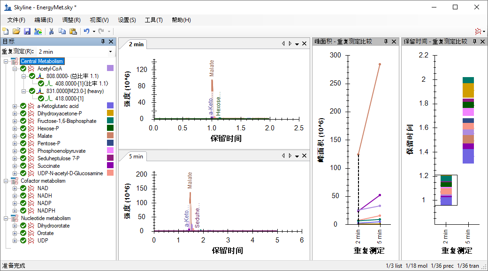
Looking at the Peak Areas – Replicate Comparison view you can see that the 5 minute gradient has generally greater peak areas than the 2 minute gradient. You could choose to perform technical replicates to be sure this is not random variance. In this case, the 5 minute method seems to show higher peak areas for many analytes but not all, likely based on the better separation of the analytes and decreased ion suppression (also called “matrix effect”). Based on this, the 5 minute gradient is probably the better chromatography choice for this experiment.
A closer examination of the chromatographic peaks is also useful:
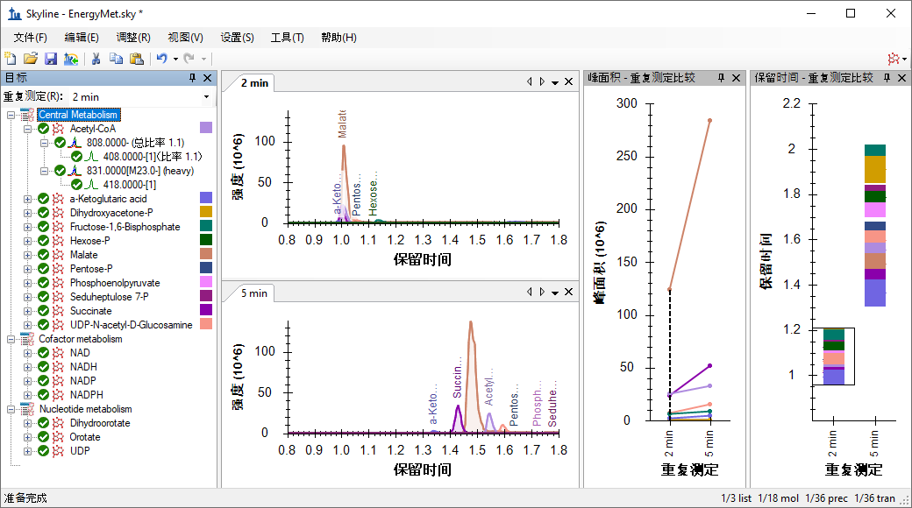
Having decided on the 5 minute gradient, you can now produce a scheduled method or transition list. For the rest of this tutorial it is assumed that you do not have the MassLynx instrument control software installed, and you will produce transition lists rather than native methods. The description above for how to create instrument methods should allow you to substitute, using a template method, when you so desire.
First, you want to set a retention time window that will be exported to your transition list.
The Molecule Settings form should now look like this:
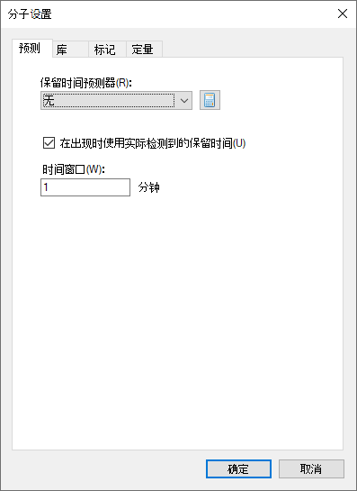
Now you can export a transition list file as follows:
Which should leave the Export Transition List form looking like this:
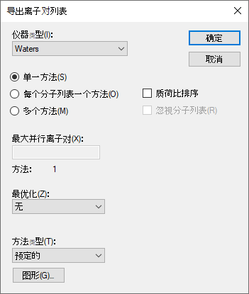
You will be asked which replicate to use for elution times.
The Scheduling Data form should look like this:

You will be prompted for a transition list file name.
At this point you would use the newly generated scheduled transition list to collect new results on a mass spectrometer. For this tutorial data was collected in three runs with different light:heavy ratios. There is a 1:1 mix, a 1:2 mix, and a 2:1 mix. To import these runs into your document do the following:
This will cause the Import Results form to show the full file names (with extensions removed) as what Skyline will use for the replicate names, as shown below:
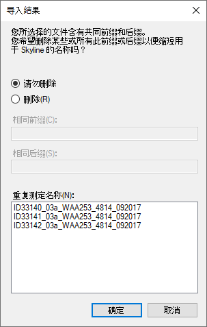
As you are done with the data from the two minute gradient, you may remove it from the document as follows:
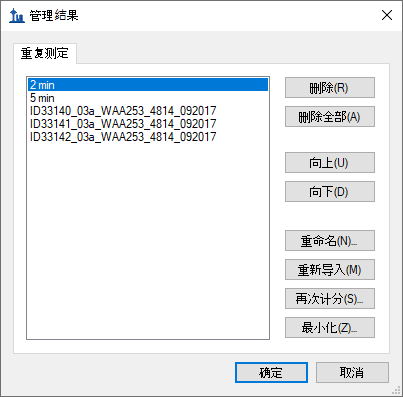
Now rename the remaining 4 replicates as follows:
| Note: This renaming can be done in the Document Grid as well, using a custom report template that includes the Replicates > Replicate Name field. |
When you are done, the Manage Results form should look like this:
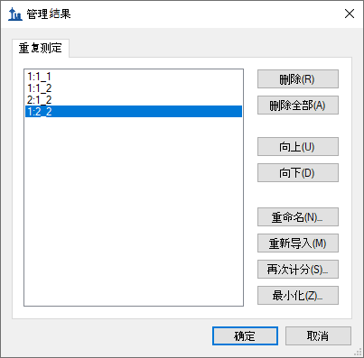
You can get visual confirmation of the known ratios of the samples by looking at the Peak Areas – Replicate Comparison view.
You can see that the peak areas have the expected ratios based on the known mixture ratios. In the Retention Times – Replicate Comparison view you can also see that the chromatography is stable with Acetyl-CoA eluting at around 1.55 minutes in every run, especially consistent among the scheduled runs.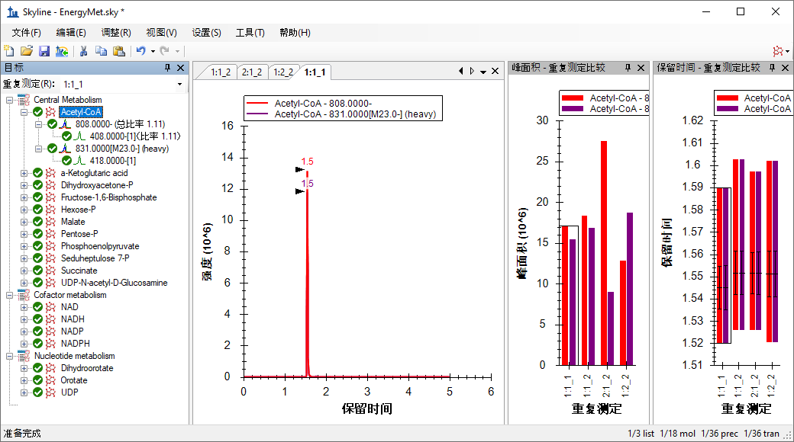
You can evaluate linearity in response between the known concentration ratios and the integrated chromatogram peak areas using the Skyline calibration function.
When you are don the Document Grid should look like this:
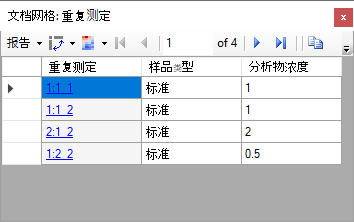
You also need to specify some quantification settings before inspecting a calibration curve for these runs by doing the following:
The Molecule Settings form should now look like this:

To examine the calibration curve graph, do the following:
You should see a graph like this:
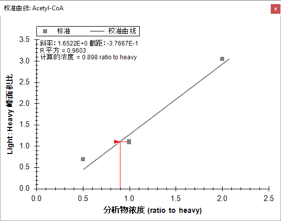
The three dilution ratios evaluated here clearly are not as linear as one might hope. Therefore, you should expect some additional work to be required to obtain information on the linear dynamic range of this particular assay.
Next you might want to collect data in order to determine the optimal collision energy for each transition in the hope of obtaining as much sensitivity as possible for the analytes in the assay. Remember the original collision energy values were from a published experiment performed on a different instrument (Agilent 6495) from a different vendor. Skyline will help generate a series of scheduled transition lists with collision energies automatically varied around the initial explicit collision energy specified in the original transition list. We used identical transition lists to collect new results on the same Waters Xevo TQ-S used in the other runs you have seen in this tutorial. You will import these runs and use Skyline to select the optimal CE values for the Waters instrument.
Begin by checking the collision energy settings as follows:
This opens the Edit Collision Energy Equation form where you should ensure the following settings in the Optimization section:

This will cause Skyline to produce 11 measurements per transition where the collision energy is varied up and down in 2-volt increments, for 5 steps in each direction around the original specified value, or 11 total. A general recommendation is to start with relatively large Step size (2 or 3 volts) and then optionally repeat the optimization with a smaller Step size (1 volt) in order to fine tune the optimization if the change in signal between steps looks large enough to warrant this extra work.
Make these final adjustments in the Transition Settings – Prediction tab before exporting transition lists for performing the optimization:
The Transition Settings form should now look like this:
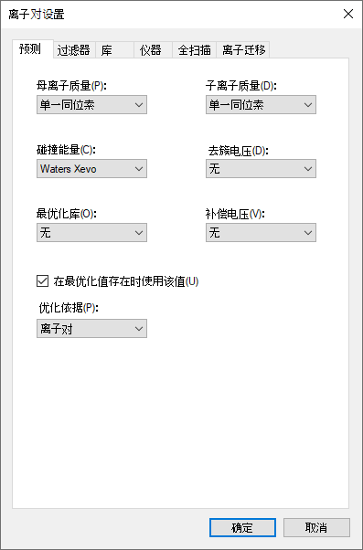
Now you can export scheduled transition lists which will allow Skyline to determine optimal CE values for the targets in this experiment. Again, when you are working on a machine with the instrument control software installed, it is generally preferable to export native methods, but for the purposes of this tutorial you will continue to export transition lists.
Remember that optimization will multiply the 36 transitions in the Targets list by 11 to give you 396 total transitions the instrument must measure.
The Export Transition List form should now look like this:
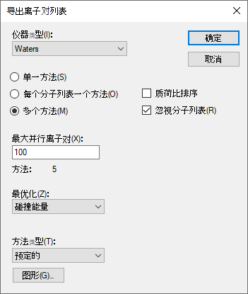
Note that the Max transitions per sample injection field name changed to Max concurrent transitions when you chose to make this scheduled acquisition. Consider how scheduling may allow not all transitions in a run to be measured in every cycle. Skyline automatically performs this calculation to ensure the instrument will never measure more than 100 in any cycle to ensure a desired dwell time and points across chromatographic peaks are achievable. In spite of this, the Methods: 5 label in the form is telling you it will take 5 separate transition lists and 5 runs in the mass spectrometer to measure 396 transitions required to perform the optimization, while keeping all of the transitions for each analyte in the same run.
You will be asked which replicate to use for elution times.
The Scheduling Data form should look like this:
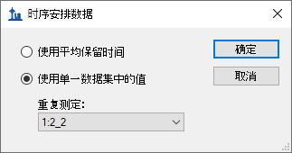
You will be prompted for a transition list file name.
This should produce five files:
We used identical transition lists to measure the 1:1 sample once with each. To perform the intended optimization, you should now import the resulting data files as follows:
Where in each of the prior imports, you wanted to treat each data file as a complete set of measurements for all of the transitions you were targeting, in this case, you want to combine the five CE optimization runs into a single logical set of measurements of the targets. To do this make the following adjustments to the Import Results form:
The form should now look like this:
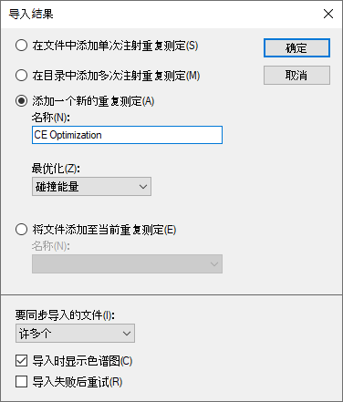
The Import Results Files form should look like this:
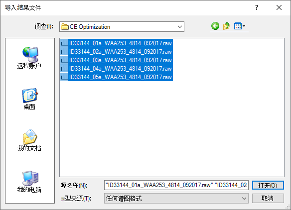
The files load as a single replicate named “CE Optimization”, which should appear in the Replicates dropdown list in the Targets view, as the right-most value in the Replicate Comparison plots, and as the right-most tab among the chromatogram plots, as shown below:
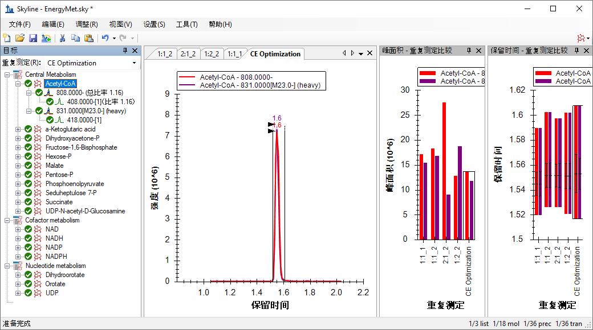
But you still need to do the following to be able to visualize the 11 different measurements made at 11 different CE voltages for each transition in the Targets view:
The main Skyline window should look like this:
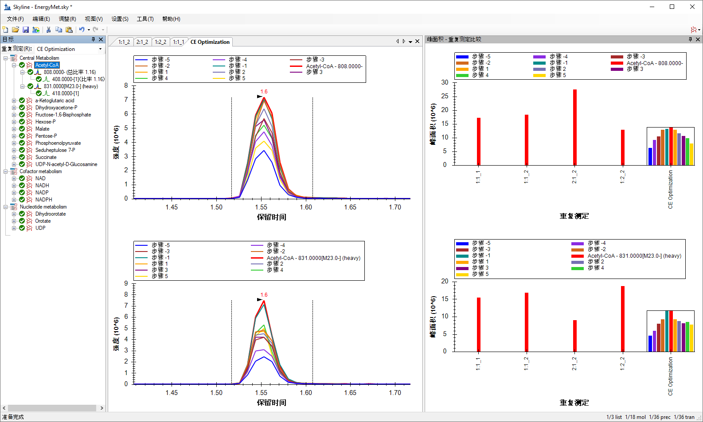
The Peak Areas – Replicate Comparison view now shows the heavy and light transitions in separate panes with the light above the heavy. Within the CE Optimization replicate, the individual bars represent the effects of stepping the collision energy. Red represents the original CE value (as used with the Agilent 6495 instrument in the literature), the other bars show the effect of 2eV steps away from that. You can see that for Acetyl-CoA, at least, the original value or the -2eV step achieve the highest peak area. This is easier to see if you free up room in the graph by switching off the legend:
Skyline should look like this:

Now you can explore the other molecules to see how close to optimal the original collision energies were. You can do the following to achieve this:
Looking at the chromatograms for the various CE step values for Pentose-P it is clear that the CE value from the literature is not optimal for this molecule on the Waters Xevo TQ-S. The best CE value (Step -5, the blue bar on the far left) is the lowest CE value measured.

Given the trend toward that end of the range, futher investigation may be warranted to arrive at a truly optimal CE for that compound. For that reason, starting with a wider step size (such as 3 volts) may also be warranted when translating between instrument vendors like this. Even so, the “Step -5” (blue bar) CE value is a clear improvement over the initial (red bar) CE value
You can proceed to creating a new scheduled transition list that uses the most effective observed CE values as follows:
This time you only need a single method again, because you will only use the one optimal CE value for each transition.
The Export Transition List form should now look like this:

You will be asked which replicate to use for elution times.
You can use whichever run you feel has the most representative retention times, which will often be the most recent run, as retention times can drift as a column ages. In this case, you saw that the retention times are quite stable, which means just about any option in this form will work with the 1-minute scheduling windows you assigned earlier. Regardless of what you choose the optimal CE values will be taken from the only replicate with CE optimization data.
The Scheduling Data form should look like this:
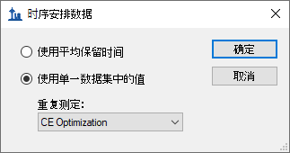
You will be prompted for a transition list file name.
At this point, it is interesting to compare where you began – using SRM transitions and CE values from the literature for an Agilent 6495 mass spectrometer published as a simple flat file; to where we have arrived – a retention time scheduled and CE-optimized SRM method for 18 energy metabolites and their internal standards for the instrument you plan to use, or at least the one we used in producing this tutorial, the Waters Xevo TQ-S.
If you wished to further optimize the CE for Pentose-P (recalling that the CE value identified as optimal was at the edge of the tested range), you could repeat the process using the EnergyMet_5minutes_optimal.csv transition list as the starting point for a new round of CE optimization, perhaps with a 1 volt step size and possibly fewer steps.
As mentioned previously, when performing iterative optimization, it is a good idea to start with large step values to test a broad range of CE values, and then move to smaller steps in later iterations to narrow in on the final values. When performing CE optimization, if Use optimization values” button is checked under Settings menu, Transition Settings, Prediction, you can expect that the new exported method or transtion list will automatically incorporate the optimimum collision energy into the method. No manual curation of the CE optimization data is required, other than examination to see if a wider CE optimization range needs to be explored.
In this tutorial, you have learned how to create a Skyline document that targets stable isotope labeled small molecules specified as only precursor m/z, product ion m/z, and collision energy values, from published experiment. You performed retention time scheduling and collision energy optimization for small molecules by importing a multiple replicate data set from a Waters Xevo TQ-S using initial CE values from an Agilent 6495 triple quadrupole mass spectrometer. You learned how many existing Skyline features created initially for targeted proteomics use can now be applied to generalized molecule data. Non-proteomic molecule support is still a relatively new feature area for Skyline. As such, you can expect it to continue improving rapidly.